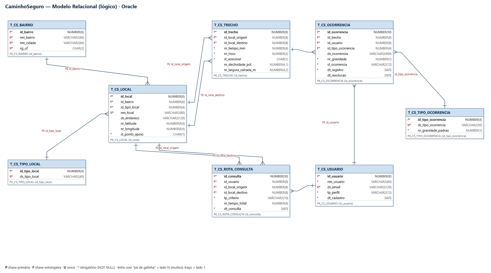

Equipe: Equipe 1 — CaminhoSeguro
Nome da solução: CaminhoSeguro
| Integrante (ordem alfabética) | RM |
|---|---|
| Lucas Branquinho | 562262 |
| Vitor Bordalo | 561592 |
O CaminhoSeguro é uma CitizenTech para pessoas idosas e com mobilidade reduzida do bairro Bela Vista, em São Paulo. Calçadas quebradas, esquinas sem rampa, ladeiras e travessias perigosas fazem muitas dessas pessoas desistirem de sair de casa sozinhas. A solução mostra ao morador o caminho mais acessível, o mais seguro ou o mais rápido entre dois pontos do bairro. Os problemas das calçadas são registrados pela própria comunidade e entram no cálculo das rotas.
Objetivo do banco de dados: guardar, de forma organizada e consistente, o mapa do bairro (locais e trechos de calçada com tempo, risco e acessibilidade), os usuários, as ocorrências registradas pela comunidade e o histórico das rotas consultadas. O mesmo modelo é usado pela API Java (disciplina de Domain Driven Design) no Oracle da FIAP.
Escopo desta entrega: modelo relacional com 8 tabelas, implementação física em Oracle (DDL com todas as constraints), dados de exemplo (DML) e três consultas de apoio à decisão (DQL). Todos os dados são simulados: não há dados pessoais reais, e os e-mails usam o domínio de exemplo .example.
Fora do escopo: autenticação/senhas, fotos das ocorrências e integração com mapas externos. Essas funções ficam para versões futuras.
| Funcionalidade | O que faz | Tabelas envolvidas |
|---|---|---|
| Mapa do bairro | Cadastra os pontos do bairro (casa, UBS, mercado, metrô, pontos de apoio) e os trechos de calçada entre eles, com tempo, risco (0–10), declividade, largura e se o trecho é acessível. | T_CS_BAIRRO, T_CS_TIPO_LOCAL, T_CS_LOCAL, T_CS_TRECHO |
| Buscar rota | O morador escolhe origem, destino e critério (RAPIDA, SEGURA ou ACESSIVEL) e recebe o passo a passo. Cada pedido fica salvo como histórico. | T_CS_LOCAL, T_CS_TRECHO, T_CS_ROTA_CONSULTA |
| Avisar um problema | Qualquer usuário registra uma ocorrência em um trecho (buraco, esquina sem rampa, iluminação ruim…), com gravidade de 1 a 5. | T_CS_OCORRENCIA, T_CS_TIPO_OCORRENCIA, T_CS_USUARIO |
| Painel do agente público | O agente da subprefeitura acompanha as ocorrências e muda o status (ABERTA → EM_ANALISE → RESOLVIDA), registrando a data de resolução. | T_CS_OCORRENCIA |
| Indicadores de impacto | Contagem de rotas acessíveis consultadas por semana, percentual de trechos acessíveis e tempo médio de resolução das ocorrências. | T_CS_ROTA_CONSULTA, T_CS_TRECHO, T_CS_OCORRENCIA |

| Relacionamento | Cardinalidade | Leitura |
|---|---|---|
| T_CS_BAIRRO → T_CS_LOCAL | 1 : N | Um bairro tem vários locais; cada local pertence a um bairro. |
| T_CS_TIPO_LOCAL → T_CS_LOCAL | 1 : N | Um tipo (ex.: Unidade de saúde) classifica vários locais. |
| T_CS_LOCAL → T_CS_TRECHO (origem) | 1 : N | Um local é ponto de partida de vários trechos. |
| T_CS_LOCAL → T_CS_TRECHO (destino) | 1 : N | Um local é ponto de chegada de vários trechos. |
| T_CS_TRECHO → T_CS_OCORRENCIA | 1 : N | Um trecho pode ter várias ocorrências registradas. |
| T_CS_TIPO_OCORRENCIA → T_CS_OCORRENCIA | 1 : N | Um tipo de problema aparece em várias ocorrências. |
| T_CS_USUARIO → T_CS_OCORRENCIA | 1 : N | Um usuário registra várias ocorrências. |
| T_CS_USUARIO → T_CS_ROTA_CONSULTA | 1 : N | Um usuário faz várias consultas de rota. |
| T_CS_LOCAL → T_CS_ROTA_CONSULTA (origem e destino) | 1 : N | Um local aparece como origem ou destino de várias consultas. |
T_CS_TRECHO funciona como uma tabela associativa entre locais (relacionamento N:N de LOCAL com ele mesmo), com atributos próprios. É ela que forma o grafo usado no cálculo das rotas (Dijkstra) nas disciplinas de Dynamic Programming e Domain Driven Design.
| Tabela | Finalidade | Constraints principais |
|---|---|---|
| T_CS_BAIRRO | Bairros atendidos. Permite levar a solução para outros bairros só cadastrando novos dados. | PK id_bairro; UNIQUE (nm_bairro, nm_cidade, sg_uf) |
| T_CS_TIPO_LOCAL | Domínio dos tipos de ponto do mapa. | PK; UNIQUE ds_tipo_local |
| T_CS_LOCAL | Pontos do bairro (nós do grafo). Indica se é ponto de apoio (descanso, água, Wi-Fi público). | PK; FK bairro e tipo; UNIQUE (id_bairro, nm_local); CHECK st_ponto_apoio IN ('S','N'); CHECK de latitude/longitude |
| T_CS_TRECHO | Trecho de calçada entre dois locais (aresta do grafo) com tempo, risco, declividade, largura e acessibilidade. | PK; 2 FKs para LOCAL; UNIQUE (origem, destino); CHECK tempo > 0, risco 0–10, origem ≠ destino, st_acessivel S/N, largura > 0 |
| T_CS_USUARIO | Usuários (idoso, PCD, cuidador, morador, agente público). Dados fictícios. | PK; UNIQUE ds_email; CHECK perfil e formato do e-mail |
| T_CS_TIPO_OCORRENCIA | Domínio dos problemas de calçada, com gravidade padrão. | PK; UNIQUE descrição; CHECK gravidade 1–5 |
| T_CS_OCORRENCIA | Problema registrado pela comunidade em um trecho, com status de atendimento. | PK; FKs trecho, usuário e tipo; CHECK gravidade 1–5, status (ABERTA, EM_ANALISE, RESOLVIDA), resolução ≥ registro |
| T_CS_ROTA_CONSULTA | Histórico das rotas pedidas. É a base do indicador de impacto. | PK; FKs usuário, origem e destino; CHECK critério (RAPIDA, SEGURA, ACESSIVEL), origem ≠ destino |
As chaves primárias usam GENERATED BY DEFAULT AS IDENTITY: a API não precisa informar o ID, e o script de dados pode usar IDs fixos para as chaves estrangeiras ficarem claras. Os nomes seguem o padrão T_ para tabelas, PK_, FK_, UN_ e CK_ para constraints, e prefixos de coluna id_, nm_, ds_, nr_, st_, tp_, dt_ e sg_.
| Arquivo | Conteúdo |
|---|---|
01_DDL_caminhoseguro.sql | CREATE TABLE das 8 tabelas e ALTER TABLE com todas as constraints: PK, FK, UNIQUE e CHECK. |
02_DML_caminhoseguro.sql | INSERTs com no mínimo 5 linhas em cada tabela: 5 bairros, 8 tipos de local, 25 locais, 48 trechos, 7 usuários, 6 tipos de ocorrência, 18 ocorrências e 8 consultas de rota (125 linhas). No final, um ALTER TABLE ... MODIFY ... GENERATED BY DEFAULT AS IDENTITY (START WITH LIMIT VALUE) por tabela acerta o próximo ID automático (Oracle 12c ou superior). |
03_DQL_caminhoseguro.sql | Consulta 1: INNER JOIN (pontos de apoio e seus tipos). Consulta 2: INNER JOIN + COUNT/AVG/MAX + GROUP BY (problemas mais registrados e gravidade média). Consulta 3: LEFT OUTER JOIN + WHERE + ORDER BY (locais da Bela Vista com as rotas pedidas até eles; os que nunca foram destino aparecem primeiro, marcados como NUNCA PEDIDO). |
Ordem de execução: 01 → 02 → 03, no SQL Developer, conectado ao Oracle da FIAP. Os trechos e tempos do DML são os mesmos do grafo usado em Dynamic Programming, para que todas as partes da CitizenTech conversem.